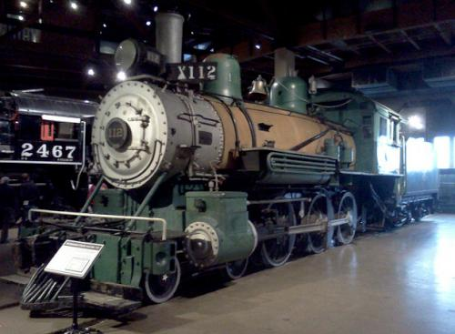

Last updated: 18 July 2015
| Builder: | ALCO (Schenectady) |
| Build #: | 44956 |
| Date: | 1908 |
| Engine #: | 112 |
| Railroad: | Northwestern Pacific (NWP) |
| Website: | www.californiarailroad.museum |
| Email: | info@csrmf.org |
| Location: | California State Railroad Museum, 125 I Street, Sacramento, California, 95814 |
| GPS: | 38.585129, -121.505204 Roundhouse. |
| Phone: | 916-445-664 |
| Status: | Display |
| Notes: | Last operated 5/1952. Gift 8/1969 of R&LHS, Pacific Coast Chapter. Sole surviving NWP steam locomotive. |
Subject to change: | |
| Admission: | Adults – $12 Youths – $6 (ages 6-17) Children – Free (ages 5 and under) Members – Free 1 |
| Hours: | Open daily from 1000 to 1700 (10AM to 5PM) with last admission at 1630 1 The Museum is closed Thanksgiving, Christmas and New Year’s Day |
| Parking: | All-day parking is available at two parking garages located at both ends of the Old Sacramento Waterfront: Old Sacramento Garage – Entrance at I Street between 3rd and 2nd St. 2 Tower Bridge Garage – Entrance on Capitol Blvd. and Neasham Circle near the Tower Bridge. 2 |
| Class: | |
| Gauge: | 4'-8½" |
| F.M.Whyte: | 4-6-0 |
| Drivers: | |
| Gear Ratio: | |
| Tractive Effort: | |
| Weight: | |
| Weight on Drivers: | |
| Length: | |
| Boiler: | |
| Cylinders: | |
| Top Speed: | |
| Horsepower: | |
| Fuel: | |
| Fuel Type: | |
| Water: | |
| Steam psi: |